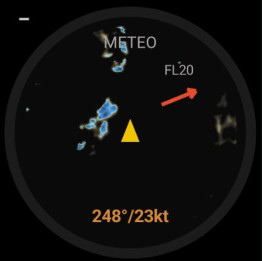
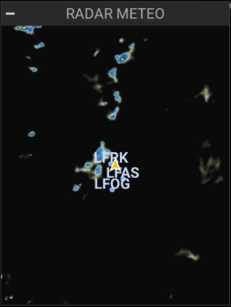

🌧
Météo (radar + vent FL20)
Radar de précipitations · vent au FL20 · terrains proches
ANLMTO · analogique
NUMMTO · numérique (50%-2L)


Possibilités
- Radar de précipitations (RainViewer) centré sur la position.
- METAR : pastilles colorées par catégorie de vol (VFR / MVFR / IFR / LIFR), cliquables → METAR brut + TAF.
- SIGMET : zones de phénomènes dangereux (orages, turbulence, givrage…) dessinées et cliquables → détail (nature, sommet, texte brut). Sources : AviationWeather.gov.
- Vent au FL20 (Open-Meteo) : flèche orange + direction/vitesse.
- Terrains proches.
Carte météo plein écran
- En-tête soignée : titre METEO, sources, bloc vent FL20, et un bouton calques.
- Calques activables : Radar, METAR/TAF, SIGMET — choix mémorisé.
- Icône avion orientée selon le cap + trajectoire future en pointillés.
- Pinch-to-zoom et déplacement ; tap sur une pastille METAR ou une zone SIGMET pour le détail.
Gestes
– Appui long : ouvrir la carte météo plein écran
·· Double-tap : —
Note
- Nécessite GPS + réseau.